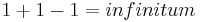

De: La Frikipedia, la enciclopedia extremadamente seria.
De: La Frikipedia, la enciclopedia extremadamente seria. De: La Frikipedia, la enciclopedia extremadamente seria.
Los Blaveros (traducción al castellano: azulisteros) fueron una raza que aparecieron sobre la tierra en el 1975 mas o menos. Creados mediante ingeniería genética por expertos científicos del protoPSOE en colaboración con cocinillas de la UCD. Galardonados por la UNO como los mejores inventores del siglo XX, por encima de Einstein y Leonardo da Vinci, se fueron exendiendo por el Reino De Valencia hasta llegar a las cumbres de las altas montanyas habitadas por los maulets, donde empezo una gran batalla por el control de la isla caribeña de Montserrat. Pero de golpe el vulcano entro en accion y arrasó a casi todos los maulets, convertiendolos en frias estatuas de piedra. Se estima que los maulets volverán a la tierra de aqui 4000 años, mientras tanto los blaveros se dedicarán o a militar en la falange Española o votar al PP.
Sus principales inventos fueron el blavenciano, lengua que ellos llaman Llengua Valensiana y que juran ante Dios y por los gayumbos del Palleter que NO tiene nada que ver con el catalán (¡antes muertos!). Pero el hecho que más conmoción causó fue la frase a-d'est auep, la cual ni ellos han podido descifrar.
Sus principales comparaciones matematicas, sorprendieron a mas de uno, con esta formula:

algo que se entiende mas como:
catalanistas=nazis.
y que fue formulada por un ex-miembro de la falange.
El otro invento principal por el que serán recordados en los libros de historia es por el perrorismo idiomático, que consiste en provocar faltas ortográficas en la señalización de tráfico, sea cual fuere el idioma original del poste, y esté este dónde esté ubicado (indiferentemente que direccione a la playa de Matalascañas/Huelva, acabará redireccionando tarde o temprano a la PlaJa de Matalascañas/Uelba))convirtiéndolo a la fuerza en blavenciano normativo. El perfeccionamiento de este invento los ha acabado convirtiéndo en gais (GAY´S), ya que sienten el impulso de firmar sus obras de perrorismo en las paredes más cercanas y el Dr. Aligator está siempre acechándolos para alargarles el palito de la V (se aceptan fotos para ilustrarlo).
Hoy en dia los blaveros disponen de 3 banderas valencianas, 3 millones de banderas españolas con el toro de osborne, 14 millones con el escudo franquista y 40.000.000 de senyeras catalanas, que piensan quemar los dias 17 y 18 de julio, catalogando el hecho como: Prou invasors catalans a/eu lo regne/reine.
El numero de integrantes es dificil de averiguar, porque no se sabe si el PP de Valencia se considera blavero o no. Aunque por definición se considerán hijos del PSOE y competencia del PP, aunque como buenos hijos bastardos odian a sus padres por darles la vida.
También tienen pensado pintar Valencia de azul, pero Francisco Campos se enfadaria porque, en agosto cuando hay el premio de formula 1, la pintura estaria todo el dia fundida, y el, que se declara seguidor oficial de Ferrari, no quiere que los coches italianos se ensucien. Y que encima ese olor que desprende la pintura haga que los turistas no puedan ir a dejar su pasta en sitios como Benidorm o Marina D'Or.
Oficialmente también están censurados en los medios de comunicación oficiales, aunque todos los periódicos "pogres" les reservan dos o tres páginas gratuitas el 26 de Abril y el 10 de Octubre, y en elecciones les hacen descuentos extraordinarios para incluir publicidad pagada a página completa diarimente. Exceptúando esta situación en Las Provincias (diario que tuvo su auge gracias a los intelectuales blavencianistas que poblaban sus páginas de noticias y columnas de opinión diariamente desde el Pleistoceno hasta finales de los 90 del siglo XX que su directora murió ahogada por un bukakke masivo en un acto político) y en Radio Miramar (se escucha en la frecuencia 3 de los Walki-Talkis de los chinos en un radio de 20 metros a la redonda del "Ayuntament" de este bonito enclave de La Safor.
Traducción:
Para separarse mas del catalán un miembro del GAV propuso el alfabeto valenciano, que es una mezcla entre el occidental, el cirilico, el griego y el chino. Aqui tenemos una buena muestra de él:
ゥウ ΣΤ きぎ ゝゞ blaveros®.
Este alfabeto está a día de hoy incompleto porque necesitaban más letras, pero preferían emplear su tiempo yendo a lamerle el culo entrevistarse con Rita Barberá.
Autor(es):